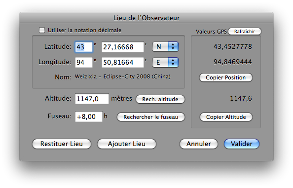

Mettre à jour le lieu de l’observateur
Pour mettre à jour le lieu d’observation dans Lunar Eclipse Maestro vous devez ouvrir le dialogue Lieu de l’Observateur.
-
Dans le menu Observateur sélectionnez Localisation…
-
Remplissez les champs.

-
Quand un GPS est connecté au Mac, vous pouvez transférer les coordonnées géographiques et l’altitude fournies en utilisant les boutons Lire GPS. Autrement les champs contenant des données GPS sont vides et les boutons de transfert désactivés.
Tous les GPS Garmin USB utilisant le protocole propriétaire Garmin PVT (non testé avec un câble série et un adaptateur série-USB) sont supportés.
-
Le bouton Rech. altitude vous permet de récupérer l’altitude du lieu depuis l’Internet.
-
Le bouton Rechercher le fuseau vous permet de récupérer le fuseau horaire du lieu depuis l’Internet.
|
Vous pouvez aussi ajouter un lieu à la liste, ou encore récupérer et supprimer des lieux de la liste.
Avec Lunar Eclipse Maestro Pro, vous pouvez saisir des informations supplémentaires comme la Pente vers l’horizon ou la Température.